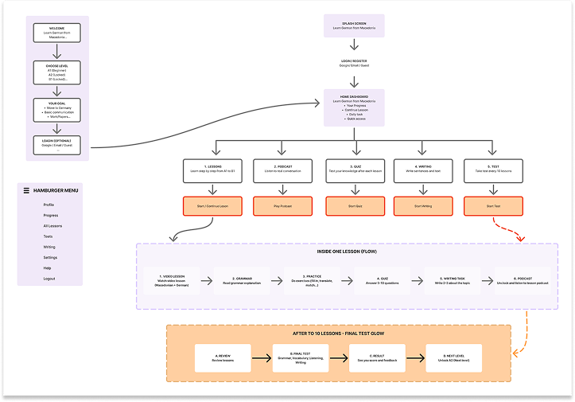

LingoDeutsch is a language-learning platform designed to help Macedonian speakers learn German more easily and effectively.
The platform provides an interactive learning experience through a combination of video lessons, quizzes, reading texts, and podcasts. The content is structured to help learners gradually improve their German vocabulary, grammar, pronunciation, listening, reading, and communication skills.
Platform
iOS & AndroidDurations
20 min.Problem
Many Macedonian speakers who want to learn German struggle to find simple, structured, and engaging learning materials in their native language. Existing language-learning apps often focus on English or other major languages, making it harder for Macedonian learners to understand grammar, vocabulary, and everyday German expressions.
Learners also need to use multiple platforms for different activities such as watching lessons, practicing vocabulary, reading, and listening. This can make the learning process less organized and less motivating.
LingoDeutsch solves this problem by bringing all these learning activities together in one platform, specifically designed for Macedonian speakers learning German.
Solution
LingoDeutsch provides an all-in-one language-learning app specifically designed for Macedonian speakers who want to learn German. It combines video lessons, interactive quizzes, reading exercises, and podcasts in one simple and organized platform.
The app helps users learn German step by step, from basic vocabulary and grammar to everyday communication, while explanations in Macedonian make difficult concepts easier to understand.
The goal is to make learning German more accessible, engaging, and effective for Macedonian-speaking learners.
User Persona
Name:
AnaAge:
24Occupation:
University student / Young professionalLocation:
GermanyNative Language:
MacedonianGerman Level:
A1–A2About
Ana is a Macedonian speaker living in Germany who wants to improve her German for everyday communication, education, and work. She prefers learning through short, interactive activities rather than traditional textbooks.
Goals
Improve German vocabulary and grammar Understand everyday conversations mprove listening and pronunciation Communicate more confidently in German Learn at her own pace.
Key Features
- Video Lessons – Short and easy-to-understand German lessons with explanations in Macedonian.
- Interactive Quizzes – Practice vocabulary, grammar, and comprehension through engaging quizzes.
- Reading Exercises – German texts with translations and explanations to improve reading skills.
- Podcasts – Improve listening and understanding of spoken German.
- Everyday Conversations – Learn useful German phrases and dialogues for real-life situations.
- Vocabulary Builder – Learn and practice new German words by topic.
- Progress Tracking – Track learning progress and see completed lessons and quiz results.
- Level-Based Learning – Structured content for different levels, from A1 to C1.

User Flow